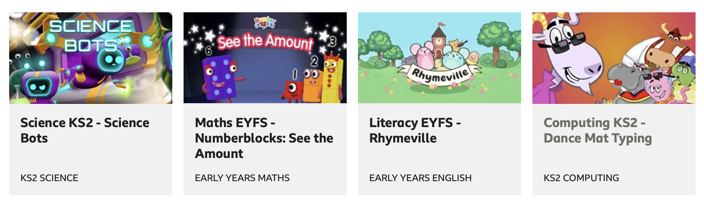
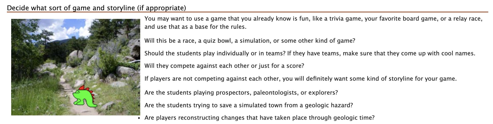

Lab 7 - finish
IL - write about engaging with creativity
Lab - export more image versions?
Independent Learning
Task 1
PreparationIn task 1, I began by looked at different potential topics. I started by coming up with a list of ideas and then narrowing this down by conducting further research about each topic. I looked at different websites and academic sources to get more information about each of my potential topics. After doing this I had discussions with some of my classmates to help me talk through each topic.
Incubation
After conducting all of my preparation, I decided on a topic. This allowed for me to start coming up with ideas for what information I wanted to include on the website. I also had to start considering my target audience as this affects the content on the website. I brainstormed some user stories in intependent learning 2. This was to help me think about what different users would require in the site.
When completing lab task 2, I had to evaluate other websites in terms of things like layout, multimedia, structure etc. This gave me a break from thinking about my own website. After taking notes on these features on the websites I evaluated, it gave me more things that I could consider on my own site.
Ideation
I engaged in ideation when I decided on what my site would be focused on and the target audience that it would be directed towards. After conducting further research and using my user personas/stories to identify what different audiences would be looking for, I came to a finalised decision.
Evaluation
In the independant learning on week 3 I conducted an evaluation by thinking about what the target audience would take away from the website. I also wrote a reflective statement about what I had considered in terms of design of the website. My project consultation helped me to further evaluate my idea. I hadn't considered things like, what school curriculum I would provide game examples for. I also hadn't thought about how many subjects I wanted to give game examples for. Considerations like these have made me further evaluate the content that I want to put on my site.
Implementation
I have been implementing all of my ideas, work and reflections into my portfolio website continuously over the semester. I will be implementing the skills I have learned in my MAD(B) website. For example, by editing images and videos to add to the site. I will also be using the research and knowledge that I have gathered throughout all of the independent learning and lab tasks to write the information to go on my website.
Task 2
BBC Bitesize - Primary Games
What are the images used for: propaganda, advertising, click bait, aesthetics? Do they align with the website's key message(s)?
I believe the images displayed on this page are both for aesthetics and click bait.
All of the pictures contain happy characters, bright colours and 3 out of 4 contain the title in the image.
I think these come under aesthetics as the page would be very plain and boring without any images.
I also think these are click bait because they are trying to attract students to play the educational games. By making the pictures colourful and fun looking, it might help to interest students in the games more than just a piece of text that says it is a maths based games.
There is a clear consistency within the images given the colours and characters.
Can you find evidence of images used with intent, which enhances information comprehension, retention and appeal?
The images shown here are used with intent to help enhance information comprehension. This is because they are used alongside the game titles to help give a quicker and clearer view of what the games are about - a lot of the images include a title and subject area. For example, 'Science Bots' gives the subject away in the image. And in 'See the Amount', it is clear that this is maths based as there are numbers above the rectangle characters in the image. I would say that these images do help with the appeal as the audience will be more drawn to certain games if the image above them looks interesting. It might also help is children aren't interested in science, they might see the picture and think it looks good, rather than just reading the word 'science' and scrolling past it.
What kinds of images are used? Raster, vectors, a combination?
These images are raster images. I checked this by zooming in to the images on BBC Bitesize. When zoomed in, they become very pixelated.

SERC - How to teach using game-based learning
What are the images used for: propaganda, advertising, click bait, aesthetics? Do they align with the website's key message(s)?
I believe this image is simply to add to the aesthetics of the page.
It doesn't add any information to the page and therefore I don't think it needs to be there.
Can you find evidence of images used with intent, which enhances information comprehension, retention and appeal?
While the image is used beside text regarding deciding on a type of game to use, I don't feel the image adds anything to the information comprehension of this text. I don't believe it will help with retention or appeal as it isn't a very interesting image. It looks like quite a blurry image and doesn't make sense next to text about choosing a game and storyline as it doesn't show a storyline or anything. There also isn't much information to suggest whether this image has been taken from a game or not.
What kinds of images are used? Raster, vectors, a combination?
This image is a raster. It becomes pixelated when you zoom in on the image.
Labwork
Task 1/2/3
Master File:

RGB Image:
300px
800px
1280px
I wouldn't want to use the 300px quality on my website. This is because it appears as very blurry when re-sized meaning users might not be able to make out what is shown in the image.
Where possible - and the file size isn't too large, I would like to use 1280px images. Whilst these are the nicest in quality, for images that aren't as detailed this level of quality wouldn't matter as much. I think a good idea would be to compare the file size before deciding what quality to use.
Lower image quality would mean faster loading time for the pages. So using 800px images would mean the pages load faster. This could help with user retention as it means the user is waiting less time for pages to fully load.
My personal preference for the images is rgb. I think putting them into greyscale is a good way to see if the image has good contrast or not. But I would like to keep images in colour.